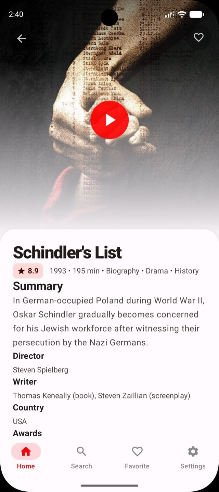
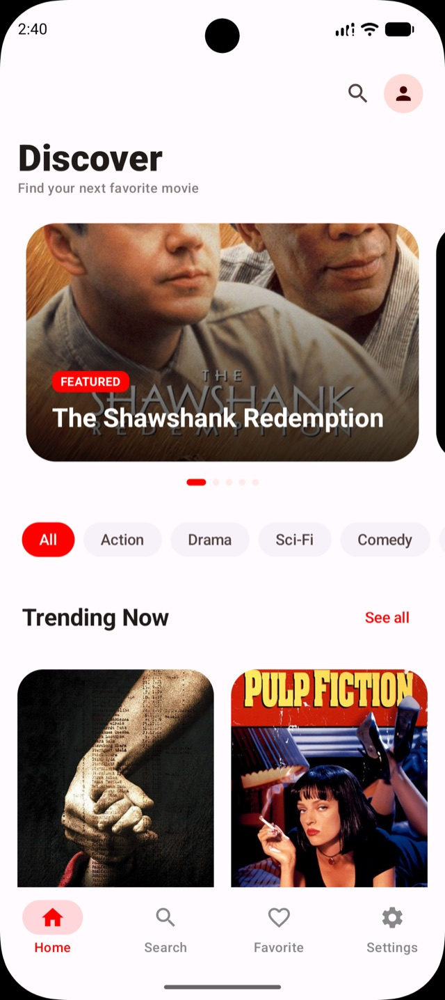

Find your next watch.
Browse a visual movie catalog and search for a title that’s on your mind. Something good is waiting.
OPEN SOURCE · VERSION 0.1.0
For the films you haven’t found.
And the ones you’ll never forget.
Discover your next watch, get lost in the details, and build a collection of favorites. Meet CineMood.
An independent project by Ali Mohammadzadeh


Android ✦ iOS ✦ Desktop ✦ Web
BUILT WITH KOTLIN MULTIPLATFORM01 / THE EXPERIENCE
From a first glance to a new favorite.
Make a little room for movie night.
Browse a visual movie catalog and search for a title that’s on your mind. Something good is waiting.
Explore the synopsis and movie details before deciding what deserves a place on your list.
Keep your favorite movies together in a personal collection, ready when inspiration strikes.
02 / IN THE FRAME
The shared Compose interface, from discovery to your saved collection.
Select a screenshot to see it full size. Scroll to explore →
03 / BEHIND THE SCENES
CineMood is an independent, open-source exploration of movie discovery across platforms. Shared Kotlin logic powers Compose interfaces on Android, desktop, and web, alongside a native SwiftUI experience on iOS.
Version 0.1.0 is an early milestone. The project is actively evolving, and the repository is the place to follow progress, build the app, or contribute.
Build it yourselfTHE NEXT CHAPTER IS OPEN.
{kind=link}
{kind=link}
{kind=link}
{kind=link}